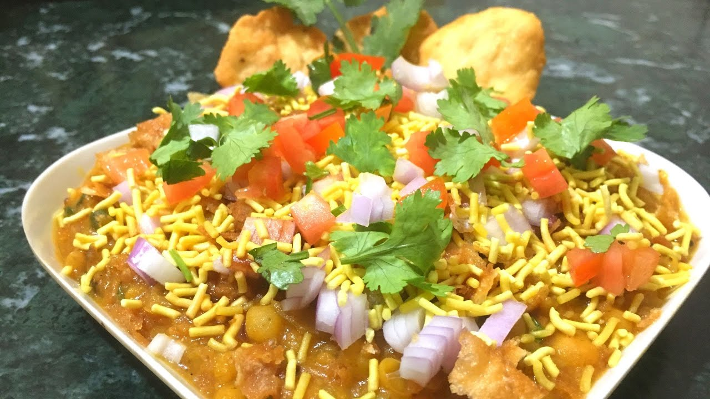
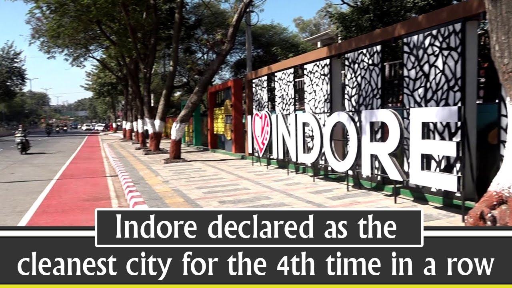

|
|
Hey My Name is Aman Neema. I am From Indore The City is famous for Poha. I Have Completed my Degree from Sushila Devi Bansal College of Technology Indore. I Like to Watch Webseries, Listening Music and Travelling. So Below Pictures that you have seen is my Favourite Indori Foods. |
My Favourite Indori Foods



Achievement of The City
